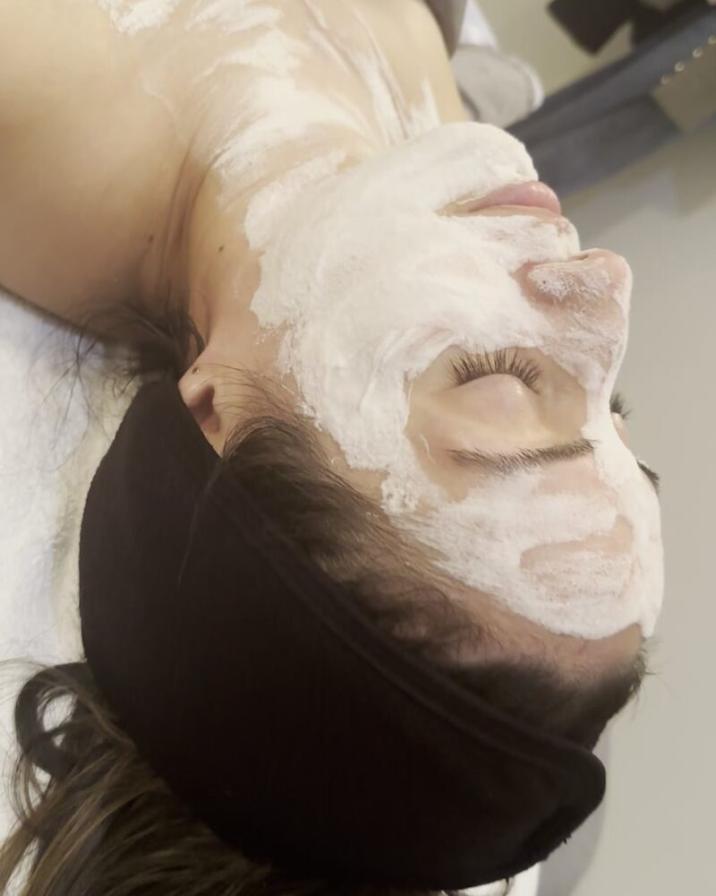

Advanced Treatment
Microneedling in Salt Lake City, UT
Stimulate your skin's own collagen to reduce acne scars, improve texture, and address early signs of aging — with lasting results that build over time.
Rebuild Your Skin From the Inside Out
Some skin concerns go deeper than a facial can reach. Acne scars, textural irregularities, enlarged pores, and early signs of aging all involve changes below the surface — in the dermis, where collagen and elastin live.
Microneedling is one of the most effective clinical treatments for addressing these deeper concerns. It works by triggering your skin's own healing response — stimulating new collagen production from within, so results build and improve over weeks.
At Rocky Mountain Skin, we offer professional microneedling in a safe, clinical environment — with customized treatment depth, targeted serums, and full aftercare guidance built into every session.

What It Addresses
What Microneedling Treats
Microneedling uses a precision device to create thousands of micro-channels in the skin at a controlled depth. These trigger the skin's natural wound-healing cascade, stimulating new collagen and elastin. As the skin repairs itself, you'll notice:
- ✦Acne scars — rolling, boxcar, and ice pick
- ✦Post-inflammatory hyperpigmentation (PIH)
- ✦Enlarged or visible pores
- ✦Fine lines and early wrinkles
- ✦Loss of firmness or skin laxity
- ✦Rough or uneven texture
- ✦Sun damage and early photoaging
- ✦Stretch marks
What to Expect
Your Microneedling Treatment Experience
Consultation
Before any treatment, we assess your skin, discuss your concerns, and determine the right needle depth and serum combination for your goals. First-time clients always start with a consultation.
Numbing (Topical)
A numbing cream is applied to your skin 20–30 minutes before the session begins. Most clients find the treatment very comfortable — a warm pressure sensation rather than pain.
Treatment
The microneedling device is passed over the skin in precise patterns. Serums — often hyaluronic acid, growth factors, or vitamin C — are applied and driven into the micro-channels during the session, absorbing far more deeply than they could through intact skin.
Aftercare
Redness and mild swelling are normal and typically resolve within 24–48 hours. You'll avoid active skincare ingredients, makeup, and sun exposure for a short recovery window. Full written aftercare guidance is included with every session.
Results Timeline
Improvements begin at 2–4 weeks as collagen remodeling starts. Best results are typically visible at 3–6 months. A series of 3–6 sessions is recommended for scar revision or significant texture concerns.
Microneedling vs. Nano Needling
Traditional microneedling penetrates the dermis to trigger collagen production. Nano needling uses silicone tips that create micro-channels in the outer skin layer without penetrating as deeply — a gentler, no-downtime option ideal for sensitive skin or first-timers. We offer both and select the right technique based on your skin and goals.
Utah Skin Considerations
Microneedling in Utah's Climate
Post-microneedling skin is temporarily more vulnerable to dehydration — which makes Salt Lake City's consistently low humidity an important factor. We build post-treatment hydration protocols specifically for Utah skin, including barrier-supportive products and SPF guidance for our high-altitude UV environment.
Who Should Not Get Microneedling
Microneedling is not appropriate for clients who:
- Are currently on Accutane (isotretinoin)
- Have active acne infections or open wounds in the treatment area
- Have a history of keloid scarring
- Are pregnant
Clients who have recently completed Accutane must wait at least 6 months before treatment. We review all contraindications at your consultation.
Free Download
Get the Microneedling Aftercare Guide
Everything you need to know for the first 72 hours after your session — day-by-day, what to use and avoid, and what to expect as you heal.
Download Free GuideReady to Start?
Book Your Microneedling Consultation
Located in South Salt Lake, UT. Queer-affirming and welcoming to all. Book a consultation to assess your skin and build a microneedling treatment plan.